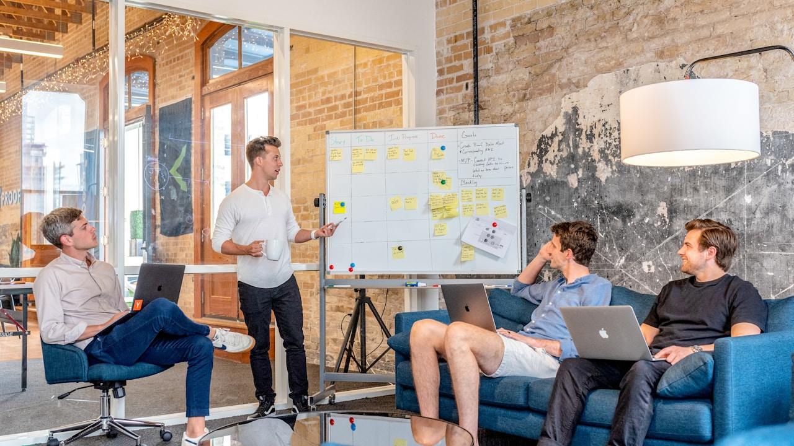

Stratégie Digitale au Maroc : Le Vrai Enjeu des Dirigeants en 2026
En résumé : Stratégie Digitale au Maroc 2026 : Le Comparatif Décisionnel des Dirigeants pour un Budget Marketing Rentable est une démarche stratégique clé dans le domaine du Stratégie Digitale. Elle permet aux entreprises au Maroc d’optimiser durablement leurs performances digitales, d’augmenter leur visibilité et de maximiser le retour sur investissement (ROI) de leurs campagnes.
La stratégie digitale au Maroc en 2026 ne se résume plus à avoir un site web ou une page Facebook. C'est un levier de croissance, un outil de conquête de parts de marché et un centre de profit à part entière. Pour les dirigeants de PME et de multinationales basées à Casablanca, Rabat, Tanger ou Marrakech, la question n'est plus "faut-il investir dans le digital?" mais "comment allouer chaque dirham de mon budget digital pour maximiser le retour sur investissement?". Ce guide comparatif est conçu pour vous aider à prendre des décisions éclairées, basées sur des données concrètes et des stratégies éprouvées, et non sur des intuitions ou des tendances éphémères.
Définition : Qu'est-ce qu'une Stratégie Digitale Rentable en 2026?
Une stratégie digitale rentable en 2026 est un plan d'action structuré et mesurable qui utilise les canaux numériques (SEO, publicité en ligne, contenu, réseaux sociaux) pour atteindre des objectifs commerciaux précis, en générant un retour sur investissement (ROI) supérieur au coût d'acquisition client (CAC), grâce à une allocation budgétaire optimisée et une analyse continue des données de performance.
Le Contexte Marocain : Un Marché en Mutation Rapide
Le Maroc connaît une accélération numérique sans précédent. Avec un taux de pénétration internet dépassant les 85% et une adoption massive du mobile, les consommateurs marocains sont plus connectés que jamais. Les entreprises qui ne s'adaptent pas à cette réalité perdent des parts de marché au profit de concurrents plus agiles. En 2026, les dirigeants doivent comprendre que le digital n'est pas un simple canal de vente additionnel, mais le cœur de la relation client et de la création de valeur.
Prenons l'exemple d'une PME industrielle à Casablanca qui vend des équipements B2B. En 2024, elle dépendait principalement de son réseau commercial physique. En 2026, une stratégie digitale bien exécutée, combinant un site web optimisé SEO et des campagnes Google Ads ciblées, lui permet de générer 40% de ses leads entrants. Le coût d'acquisition par lead digital est de 150 MAD, contre 450 MAD pour un lead généré par un commercial en déplacement. La différence est frappante et justifie pleinement une réallocation budgétaire.
Comparatif des Approches Stratégiques en 2026
Pour vous aider à y voir clair, nous avons comparé les quatre approches principales que les dirigeants marocains envisagent en 2026. Ce comparatif se base sur des critères financiers (budget initial, coût d'acquisition, ROI potentiel), temporels (délai avant résultats) et de durabilité.
1. Le Modèle Traditionnel (Hors Ligne)
Description : Publicité dans les journaux, panneaux d'affichage, salons professionnels, démarchage téléphonique.
Budget type au Maroc : 50 000 à 300 000 MAD par an pour une PME.

Avantages : Visibilité locale immédiate, confiance pour certains segments de clientèle plus âgés.
Inconvénients : Mesure du ROI quasi impossible, coût d'acquisition élevé (souvent > 1 000 MAD), difficulté à cibler précisément, aucune personnalisation. En 2026, ce modèle est de moins en moins viable en tant que canal principal.
2. L'Approche SEO / GEO (Référencement Naturel)
Description : Optimisation du site web et de son contenu pour apparaître en tête des résultats de recherche Google, et désormais dans les réponses des moteurs d'IA générative (ChatGPT, Perplexity) grâce au GEO (Generative Engine Optimization).
Budget type au Maroc : 10 000 à 60 000 MAD par mois pour une prestation de qualité.
Délai de résultats : 3 à 6 mois pour les premiers effets significatifs.
Avantages : Coût d'acquisition à long terme très bas (souvent inférieur à 100 MAD), trafic qualifié et constant, crédibilité accrue, effet cumulatif. En 2026, c'est le pilier d'une stratégie durable.
Inconvénients : Nécessite de la patience et une expertise pointue, surtout avec l'évolution des algorithmes et l'émergence du GEO. Un mauvais SEO peut être pénalisant.
3. La Publicité Payante (Google Ads, Médias Sociaux)
Description : Campagnes sponsorisées sur Google, LinkedIn, Facebook, Instagram pour générer des clics, des appels ou des ventes immédiatement.
Budget type au Maroc : 20 000 à 200 000 MAD par mois en budget média, hors frais d'agence.
Délai de résultats : Immédiat.
Avantages : Résultats rapides, ciblage précis (géographique, démographique, comportemental), flexibilité du budget, mesure en temps réel.
Inconvénients : Coût d'acquisition en constante augmentation (l'inflation publicitaire est réelle), nécessite une gestion experte pour éviter le gaspillage, résultats stoppés dès l'arrêt des campagnes. En 2026, un budget Google Ads mal géré peut brûler des milliers de dirhams sans retour.

4. Le Mix Gagnant : SEO/GEO + Google Ads + Contenu Stratégique
Description : Une approche intégrée où le SEO/GEO construit la fondation à long terme, Google Ads génère des leads immédiats, et une stratégie de contenu (blogs, études de cas, vidéos) nourrit les deux et établit l'autorité.
Budget type au Maroc : 40 000 à 150 000 MAD par mois.
Délai de résultats : Mix de résultats immédiats (Ads) et de croissance progressive (SEO).
Avantages : Optimise le coût d'acquisition global, diversifie les sources de trafic, assure une résilience face aux changements d'algorithmes, et maximise le ROI sur le moyen et long terme. C'est la stratégie que nous recommandons chez DatRey pour la majorité de nos clients.
Analyse Financière et ROI : Ce que les Chiffres Disent
Parlons chiffres, car c'est ce qui intéresse un dirigeant. Imaginons une entreprise de services B2B à Casablanca avec un panier moyen de 50 000 MAD. Son objectif est de générer 20 nouveaux clients par an.
Scénario 1 : Approche Traditionnelle
Budget annuel : 250 000 MAD (salons, publicité presse, télémarketing).
Clients générés : 15.
Coût d'acquisition client (CAC) : 16 666 MAD.
ROI brut : (15 * 50 000) - 250 000 = 500 000 MAD.
ROI en % : 200%. Mais attention, ce calcul ignore le temps passé par les équipes commerciales et la difficulté de suivi.
Scénario 2 : Budget Digital Mix (SEO + Ads)
Budget annuel : 600 000 MAD (soit 50 000 MAD/mois pour une gestion experte).
Clients générés : 40 (20 via SEO, 15 via Ads, 5 via contenu/partenariats).
CAC moyen : 15 000 MAD (SEO : 8 000 MAD, Ads : 20 000 MAD).
ROI brut : (40 * 50 000) - 600 000 = 1 400 000 MAD.
ROI en % : 233%. De plus, la croissance du SEO rend le CAC de plus en plus bas chaque mois.

L'écart est énorme. En 2026, les dirigeants qui adoptent une stratégie digitale mixte et bien pilotée obtiennent un avantage concurrentiel décisif. Ils peuvent également ajuster leurs budgets en temps réel en fonction des performances, ce qui est impossible avec les canaux traditionnels.
Études de Cas Concrètes au Maroc
Cas 1 : PME B2B à Tanger (Logistique)
Problème : Dépendance à un seul gros client, pas de visibilité en ligne.
Solution DatRey : Refonte du site web avec une architecture SEO, création de contenu technique (guides sur les solutions logistiques), et mise en place de campagnes Google Ads ciblées sur les zones industrielles de Tanger, Casablanca et même l'Europe.
Résultats en 9 mois : +150% de trafic organique, 25 leads qualifiés par mois (contre 3 avant), CAC réduit de 40%, et signature de 3 nouveaux contrats majeurs.
Cas 2 : Entreprise de Services à Marrakech (Tourisme & Événementiel)
Problème : Forte saisonnalité, concurrence intense sur les mots-clés génériques.
Solution DatRey : Stratégie de contenu axée sur des mots-clés de longue traîne ("organisation mariage luxe Marrakech"), optimisation GEO pour apparaître dans les réponses de ChatGPT et Perplexity, et campagnes de remarketing sur les réseaux sociaux.
Résultats en 6 mois : 200% d'augmentation des demandes de devis, un coût par lead passé de 120 MAD à 45 MAD, et un chiffre d'affaires digital représentant désormais 60% du CA total.
Guide d'Optimisation Budgétaire en 10 Points pour Dirigeants
Voici une check-list actionnable pour auditer et optimiser votre budget digital dès aujourd'hui.
- Auditez votre présence actuelle : Votre site est-il rapide, mobile-friendly, optimisé SEO? Utilisez des outils comme PageSpeed Insights.
- Définissez des KPIs précis : Ne vous contentez pas du trafic. Mesurez le taux de conversion, le coût par lead, le coût d'acquisition client (CAC), la valeur vie client (LTV).
- Analysez vos sources de trafic : D'où viennent vos meilleurs leads? Concentrez vos efforts sur les canaux rentables.
- Investissez dans le SEO/GEO dès maintenant : C'est l'actif le plus durable. En 2026, l'IA générative redéfinit les règles. Une agence experte en GEO est indispensable.
- Testez Google Ads avec un budget restreint : Commencez avec 15 000 MAD/mois, mesurez, optimisez, puis scalez ce qui fonctionne.
- Créez du contenu à forte valeur ajoutée : Guides, études de cas, webinaires. Cela nourrit le SEO et établit votre autorité.
- Utilisez le marketing automation : Pour nourrir vos leads et réduire le cycle de vente.
- Formez vos équipes ou déléguez à des experts : Le digital est un métier. Une agence spécialisée comme DatRey vous fera économiser de l'argent à long terme.
- Révisez votre budget chaque trimestre : Le marché change vite. Réallouez les fonds des canaux sous-performants vers ceux qui génèrent du ROI.
- Exigez des rapports transparents : Votre agence doit vous fournir des tableaux de bord clairs, avec des indicateurs de performance et des recommandations.
Pourquoi DatRey est Votre Partenaire Stratégique en 2026
Chez DatRey, nous ne sommes pas une simple agence d'exécution. Nous sommes des stratèges de croissance. Nous comprenons les réalités économiques du marché marocain et international. Notre approche est 100% orientée ROI. Nous commençons chaque partenariat par un audit approfondi de votre présence digitale, de vos concurrents et de vos objectifs commerciaux. Nous élaborons ensuite une feuille de route personnalisée, combinant SEO/GEO, Google Ads, contenu et optimisation de la conversion, pour transformer votre budget digital en un véritable investissement rentable.
Nos équipes basées à Casablanca et opérant à l'international maîtrisent les dernières évolutions des algorithmes de Google et des moteurs d'IA. Nous avons aidé des PME et des multinationales dans les secteurs de la finance, de l'industrie, du tourisme et des services à atteindre des niveaux de croissance qu'ils n'auraient pas cru possibles. Notre expertise en GEO (Generative Engine Optimization) vous assure d'être visible aussi sur Google, mais aussi dans les réponses de ChatGPT, Perplexity et autres assistants IA, qui deviennent les nouveaux gardiens de l'attention en 2026.
Conclusion : Passez à l'Action et Rentabilisez Votre Digital
La stratégie digitale au Maroc en 2026 est un levier de croissance incontournable, mais elle doit être pilotée avec rigueur et expertise. Le comparatif est clair : l'approche mixte (SEO/GEO + Ads + Contenu) est celle qui offre le meilleur ROI et la plus grande durabilité. Ne laissez pas votre budget digital être un centre de coûts. Faites-en une machine à générer des leads et du chiffre d'affaires.
Vous êtes dirigeant d'une PME ou d'une multinationale au Maroc? Vous souhaitez optimiser votre budget digital et obtenir des résultats mesurables? Demandez dès maintenant votre Audit Digital Gratuit avec un expert DatRey. En 30 minutes, nous identifierons les opportunités de croissance les plus rentables pour votre entreprise. Cliquez sur le bouton ci-dessous ou contactez-nous directement. Votre croissance commence ici.